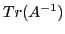
with hierarchical probing on regular stencils
The problem of finding the trace of the inverse of a large, sparse
matrix  appears in many applications, including lattice quantum
chromodynamics (LQCD), data mining, and uncertainty quantification.
When the dimension of
appears in many applications, including lattice quantum
chromodynamics (LQCD), data mining, and uncertainty quantification.
When the dimension of  ,
,  , is sufficiently small, the problem is
trivially solved by direct factorization methods.
For large
, is sufficiently small, the problem is
trivially solved by direct factorization methods.
For large  , where factorization of
, where factorization of  is not possible, the problem is
surprisingly difficult, and all current approaches resort to a Monte
Carlo method, based on the following:
Given
is not possible, the problem is
surprisingly difficult, and all current approaches resort to a Monte
Carlo method, based on the following:
Given
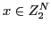
, i.e., random vectors of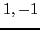
,
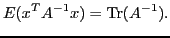
A model algorithm generates a list of
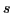
vectors, and either solves a series of linear systems of equations, or computes directly a series of Gaussian quadratures (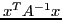
). Because of the rate of Monte Carlo convergence, several hundreds of systems need to be solved to obtain even a single digit of accuracy. The need for algorithmic improvements at any level is obvious.Our driving application is LQCD, where the matrix structure is based on a four dimensional torus-lattice. In our previous work, we focused on speeding up the systems with multiple right hand sides using deflation of a large number of eigenvectors which are obtained with negligible additional cost to solving the linear systems. Because of the large number of required right hand sides, we showed speedups up to an order of magnitude.
In this research we focus on the orthogonal issue of the quality of the right hand sides. We seek sequences of vectors that are provide better approximations than random vectors.
Over the last ten years there has been quite some interest in this topic. Bekas, Kokkiopoulou, and Saad discussed algorithms that use the Hadamard low disparity vectors that work well for matrices with certain diagonal structure. They also discussed probing which is our focus below. Recently, Avron and Toledo did a study of various random vector choices. Tang and Saad, also discussed a method based on probing.
Probing is a method for obtaining the diagonal (or the trace) of a sparse
matrix. If the graph of the sparse matrix is  colorable,
consider the set of
colorable,
consider the set of  vectors
vectors
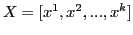
, where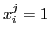
if node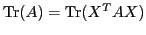
. For example, in LQCD where the 4-D lattice is 2-colorable, only two vectors would suffice to find its trace. The problem, however, is that we need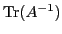
, which in general is a dense matrix.
Bekas et al. and Tang et al. exploited the fact that for a large class
of PDE based matrices, the elements of the  decay exponentially
away from the non zero elements of
decay exponentially
away from the non zero elements of  . Therefore, the largest elements
of
. Therefore, the largest elements
of  are on the same sparsity pattern as
are on the same sparsity pattern as  , which for the LQCD
case is
, which for the LQCD
case is
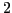
-colorable. Thus with 2 vectors we get a rough approximation of . To improve this, we have to consider a ``denser'' approximation of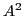
. This is known as the distance-2 coloring of the graph of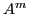
, obtain a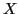
as defined above to obtain the trace. This is the approach followed by Tang and Saad. However, such approach is wasteful as all computations performed up to step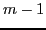
must be discarded.
In this work, we attempt to avoid this waste; at step  we build
on top of what we have already computed in steps
we build
on top of what we have already computed in steps
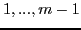
. However, we are faced with the problem that the vector subspace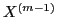
, computed from the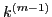
colors needed for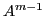
, may not be contained in the subspace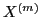
for the next step. Therefore, previous computations cannot be reused in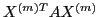
. We address this problem by considering a hierarchical graph coloring of . We start with the bipartite, red-black partitioning of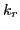
colors. Then, we color the black partition subset of the with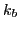
colors. We can now build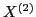
with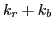
vectors, which by construction also span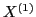
. Thus, only the complement space needs to be used. To avoid expensive orthogonalization, we can identify the complement based on a judicious use of Hadamard vectors.
A concern with the above method is that the number of colors for
any
is larger than the minimum (chromatic number of
).
We are currently investigating how much larger this can be, in
particular for a regular lattice. However, it is unclear whether this is
a real disadvantage, as the sparsity structure of
is used only as
an approximation to  . In fact, more vectors yield more
accurate results.
. In fact, more vectors yield more
accurate results.
We will discuss also two variants of this method. First, it is not
necessary to start with a red-black ordering of  , as we know that
more vectors will be needed. We can start with a
, as we know that
more vectors will be needed. We can start with a  coloring of
(say for
coloring of
(say for
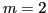
or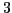
), and then apply the hierarchical graph coloring. Second, we can stop the hierarchical graph coloring at a certain distance-